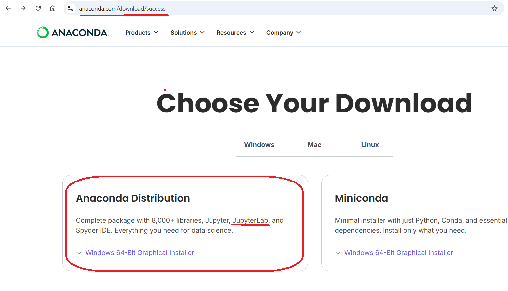
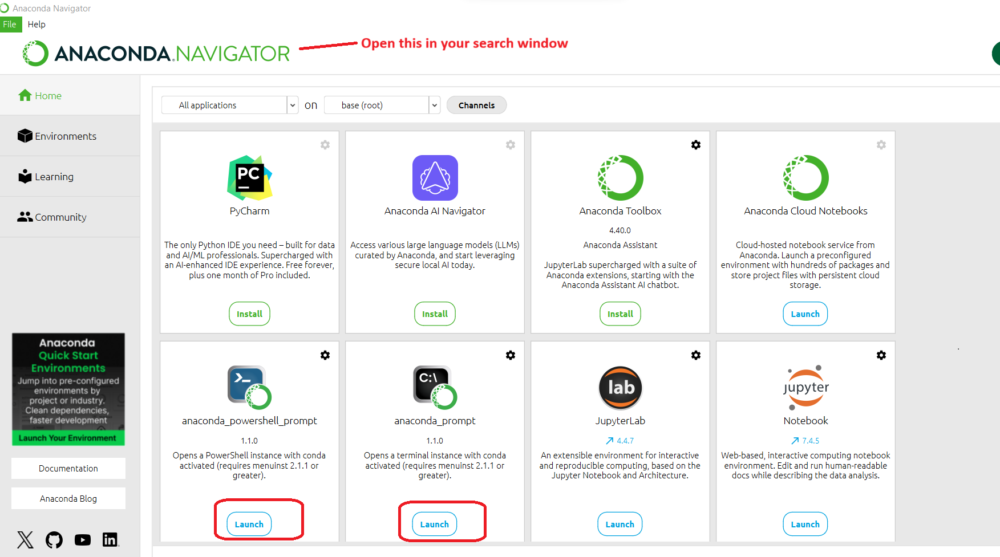
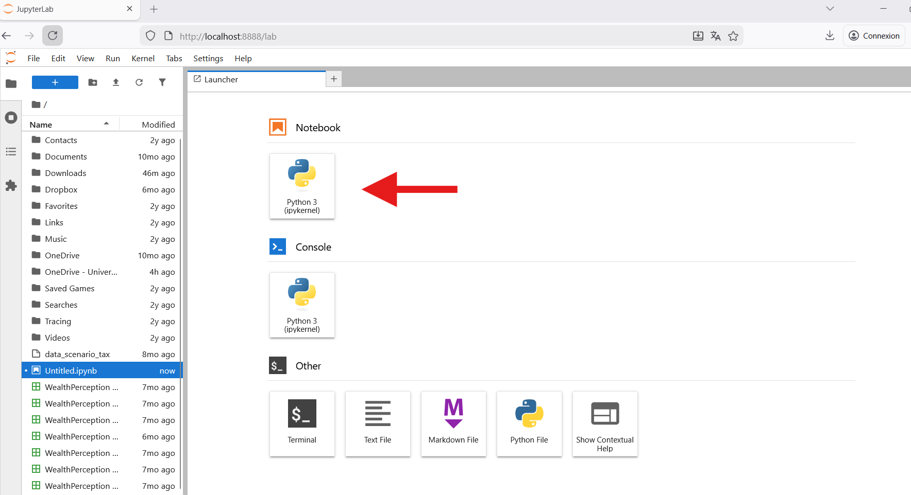

Installing and running Python #
A note on learning to code/programming#
Coding is omnipresent in today’s world. Computer code runs your phones, laptops and every AI you ever interact with. But coding is even more than that. Coding is a tool to find efficient solutions to problems and to build ‘artificial’ models of the world around us that can be explored. Learning to code is an excellent pathway to shape your own thinking: It combines logic and creativity like few other activities.
Therefore please note the following.
At all times in this ebook and course that you follow - try to really understand things that you learn and do everything yourself. Do not use Generative AI to come up with coding solutions for you during exercises, as then the entire course will be a complete waste of your time. For your future success and capability it is absolutely essential that you build your own thinking and scienitific abilities, as if Generative AI and even the Internet would not exist.
Only if you approach it this way, you will later on benefit from the synergies you can generate with these advanced technologies.
Getting Python set up (3 easy paths)#
What you’ll learn
How to install and use Python
How to run code cells in your local programming environment and, if necessary, in this book or rather from out of this book.
TL;DR — pick one
OPTION A No install: Use Google Colab in the browser. But requires google account (recommended).
OPTION B Beginner desktop: Install Anaconda and use Jupyter Lab as an integrated development environment (IDE) (recommended if no google account).
OPTION C Power users: Install Anaconda and use VS Code (flexible, extensible).
Option A — Google Colab (browser, zero install)#
Why Colab?
Runs in your browser; great for quick experiments or if you can’t install locally.
Easy sharing via Google Drive.
Steps
Click New Notebook (top left).
In the first cell, paste the test code above and press Shift+Enter.
Install extra packages Colab comes with many packages preinstalled. For others post the following in a code cell.
### matplotlib is just an example package to demonstrate how to install a package in a Jupyter notebook. You can replace it with any package you want to install.
%pip install matplotlib
### in my case the output is that the requirement is already satisfied.
Requirement already satisfied: matplotlib in c:\users\yoswald\appdata\local\programs\python\python311\lib\site-packages (3.8.2)
Requirement already satisfied: contourpy>=1.0.1 in c:\users\yoswald\appdata\local\programs\python\python311\lib\site-packages (from matplotlib) (1.2.0)
Requirement already satisfied: cycler>=0.10 in c:\users\yoswald\appdata\local\programs\python\python311\lib\site-packages (from matplotlib) (0.12.1)
Requirement already satisfied: fonttools>=4.22.0 in c:\users\yoswald\appdata\local\programs\python\python311\lib\site-packages (from matplotlib) (4.47.2)
Requirement already satisfied: kiwisolver>=1.3.1 in c:\users\yoswald\appdata\local\programs\python\python311\lib\site-packages (from matplotlib) (1.4.5)
Requirement already satisfied: numpy<2,>=1.21 in c:\users\yoswald\appdata\local\programs\python\python311\lib\site-packages (from matplotlib) (1.26.3)
Requirement already satisfied: packaging>=20.0 in c:\users\yoswald\appdata\roaming\python\python311\site-packages (from matplotlib) (23.2)
Requirement already satisfied: pillow>=8 in c:\users\yoswald\appdata\local\programs\python\python311\lib\site-packages (from matplotlib) (10.2.0)
Requirement already satisfied: pyparsing>=2.3.1 in c:\users\yoswald\appdata\local\programs\python\python311\lib\site-packages (from matplotlib) (3.1.1)
Requirement already satisfied: python-dateutil>=2.7 in c:\users\yoswald\appdata\roaming\python\python311\site-packages (from matplotlib) (2.8.2)
Requirement already satisfied: six>=1.5 in c:\users\yoswald\appdata\roaming\python\python311\site-packages (from python-dateutil>=2.7->matplotlib) (1.16.0)
Note: you may need to restart the kernel to use updated packages.
[notice] A new release of pip is available: 25.3 -> 26.0.1
[notice] To update, run: python.exe -m pip install --upgrade pip
IMPORTANT! Colab sessions are temporary. Save your work to Drive or download important files.
Upload data or notebooks
Upload a local
.ipynb: File ▸ Upload notebook…
Option B — Anaconda + Jupyter Lab (beginner‑friendly)#
Why Jupyter Lab?
Shows algorithm execution step by step, with explanations between code blocks.
Encourages working with small, focused code samples that are easy to rewrite and explain.
Displays text, images, and plots immediately below the corresponding code cell.
Excellent for learning fundamentals with minimal tooling and setup.
Install Anaconda
Download Anaconda Individual Edition from https://www.anaconda.com/download/success.
Install with defaults.
Use tse the red market link and distribution package below.

Create a clean environment (recommended).
What is a Python Environment? For more background, check out this Reddit thread on setting up environments for beginners. Imagine your computer is a massive, empty workshop.
When you start learning to code, it is tempting to just dump every tool, blueprint, and software package you ever download into one giant pile in the middle of the room (this is called your “base” environment).
At first, this works fine. But eventually, you run into a major problem: Tool Clashes.
Project A might require exactly “Hammer Version 1” to work.
Project B might be newer and completely rely on “Hammer Version 2”. If you only have one giant pile of tools, you can’t have both versions at the same time. Updating the hammer for Project B will completely break Project A.
The Solution: Separate Toolboxes An Environment is simply a custom, isolated toolbox built for one specific project.
This is something you have to do in control terminal for instance bash.
Open your command line interface:
Windows: Open the Anaconda Navigator from your Start menu.
from IPython.display import Image, display
# This renders the file directly without loading it as a PIL object first
display(Image(filename='pictures/installing_anaconda2.png'))

macOS / Linux: Open your standard Terminal.
Copy and paste the following commands one by one, hitting Enter after each line:
# Windows (Anaconda Prompt) / macOS / Linux (Terminal)
conda create -n ecoecon python=3.11 -y
conda activate ecoecon
conda install numpy pandas matplotlib jupyterlab -y
When you ran the command conda create -n ecoecon, you essentially told your computer: “Go to the corner of the workshop and build me a brand new, empty toolbox. Write the name ecoecon on the side.”
Now do this in the anaconda terminal as well
jupyter lab
What Happens Next A local server starts: Your terminal will start spitting out a bunch of text and URLs. Don’t worry, this is just Jupyter spinning up a local server on your machine. Do not close this Terminal window, or Jupyter Lab will shut down.
Your browser opens: Within a few seconds, a new tab should automatically open in your default web browser (like Chrome, Safari, or Firefox). This is the Jupyter Lab interface.
Start Your First Notebook
Once you are looking at the Jupyter Lab screen in your browser:
You will see a “Launcher” tab in the main area.
Under the Notebook section, click the Python 3 (ipykernel) tile.
This opens a fresh, blank notebook. You can click into the first gray cell, type a simple math equation (like 2 + 2), and press Shift + Enter to run it.
from IPython.display import Image, display
# This renders the file directly without loading it as a PIL object first
display(Image(filename='pictures/installing_anaconda3.png'))

Option C — Anaconda + VS Code (flexible, not-so-beginner)#
Why VS Code?
Excellent editor, Python and Jupyter extensions, debugging, terminals, Git.
Works with both scripts (
.py) and notebooks (.ipynb), and “cell” style# %%.
Install prerequisites
Install Anaconda (as above).
Install VS Code from https://code.visualstudio.com/.
In VS Code, install extensions:
Python (Microsoft)
Jupyter (Microsoft)
Create/select your conda environment
conda create -n ecoecon python=3.11 -y
conda activate ecoecon
conda install numpy pandas matplotlib jupyterlab -y
Tell VS Code which Python to use
Open your project folder in VS Code.
Command Palette (Ctrl/Cmd+Shift+P) ▸ Python: Select Interpreter ▸ choose the
ecoeconenv.Open a terminal in VS Code (Terminal ▸ New Terminal) — it should show
(ecoecon).
Run Python
Script: create
hello.py, run with the ▶ Run button or right‑click ▸ Run Python File.Notebook: create a new Jupyter Notebook (
.ipynb) and run cells.Cell mode in .py: use
# %%to define cells, then click Run Cell above each cell.Notebook: create a new Jupyter Notebook (
.ipynb), paste the test code, press Run (▶).
You may be asked to choose a Python kernel. Choose Python Environments then ecoecon.
Tip
No matter which route you choose, test your setup by running:
print("Python is ready 🎉")
import sys, numpy as np
print(sys.version)
print("NumPy:", np.__version__)
Choosing your path and wrapping up#
Debugging quick start
What is Debugging ? It’s a very useful feature that allows a program to stop temporarily anywhere you want while executing. It allows to follow step by step a program execution in order to detect where a mistake has been made, a program starts behaving unexpectedly, etc.
Set a breakpoint (click the gutter).
Press F5 (Run and Debug) ▸ choose Python File.
Inspect variables in the Run and Debug panel.
Note
Common fix: If VS Code doesn’t “see” conda, set
Settings ▸ Python › Conda Path to your conda executable, or launch VS Code from an Anaconda Prompt.
Colab: zero setup, great for quick labs and sharing; requires internet.
Jupyter Lab: gentle desktop start; good for learning and small analyses.
VS Code: most powerful and extensible; ideal as you scale up.
Tip
For detailed tutorials to install Python and get started with programming
You can also have a look at Prof. Tom Beucler’s ebooks (who teaches environmental machine learning at UNIL).
However, we will dive into everything we need in the next chapter, too.
Here is an introduction to Python by Tom